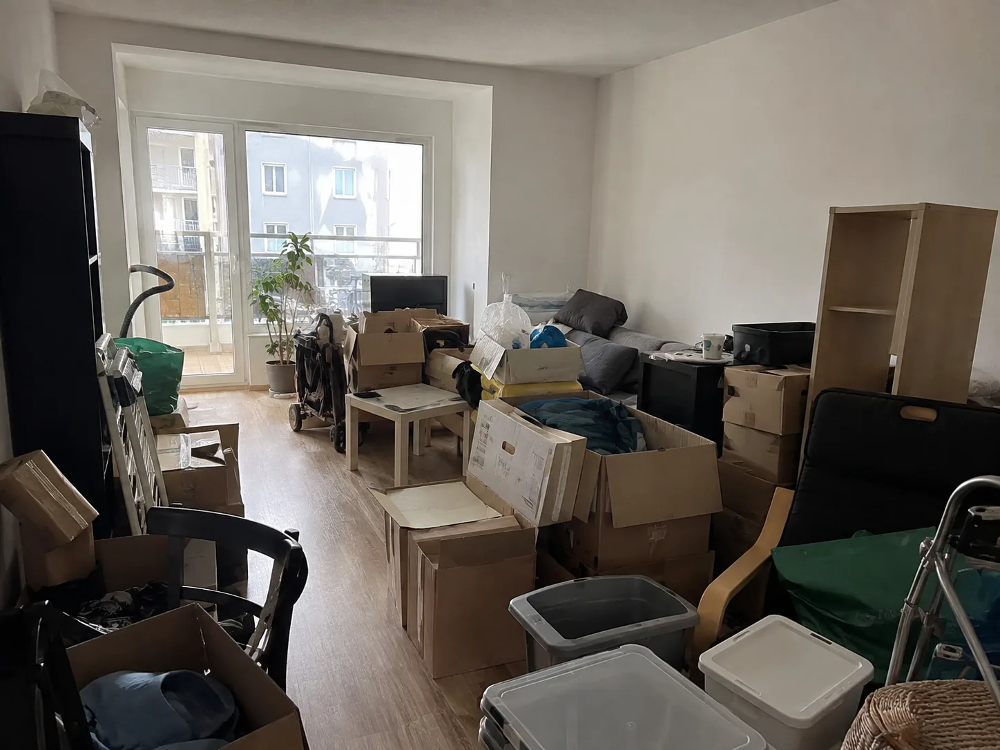
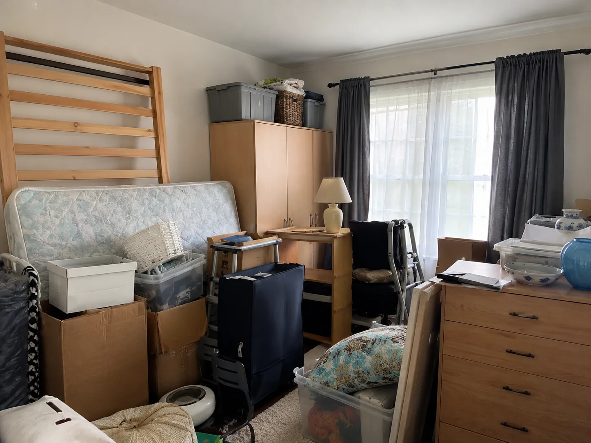
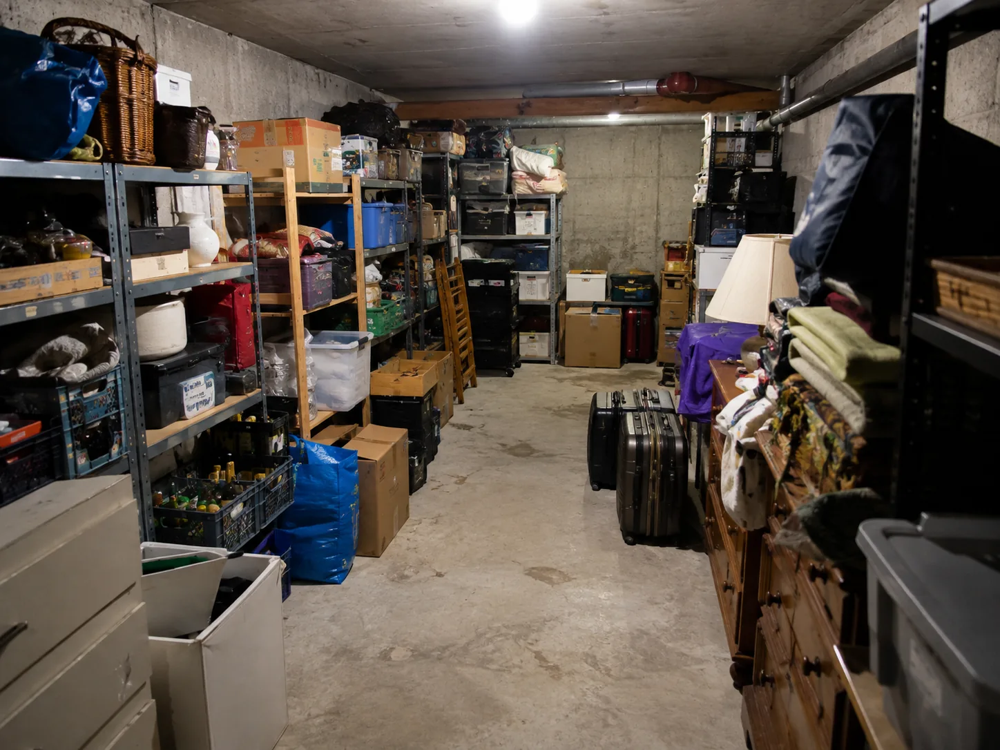
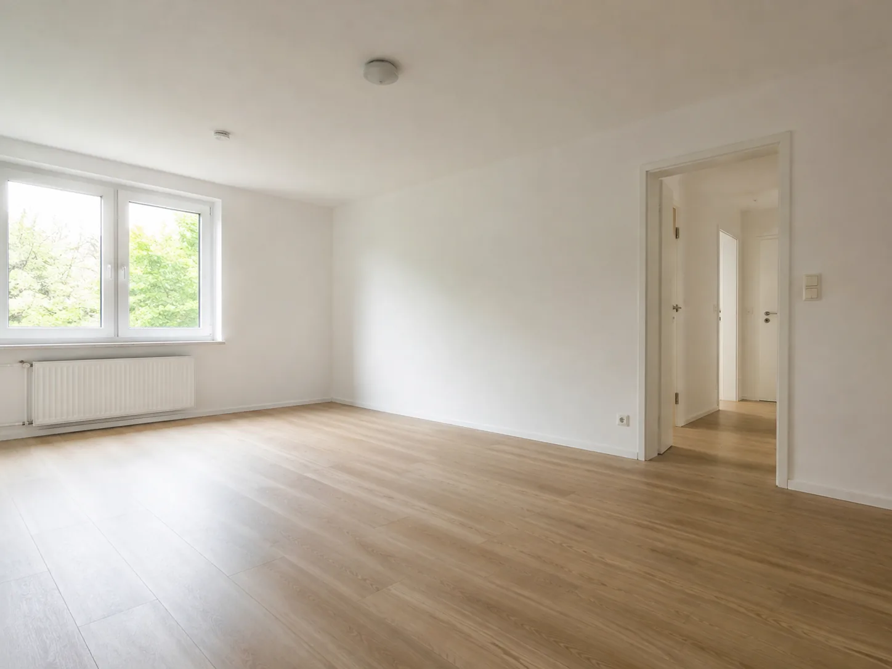
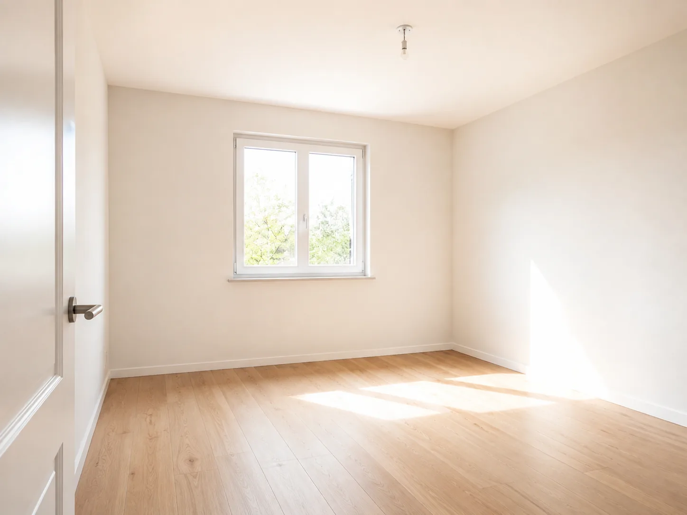
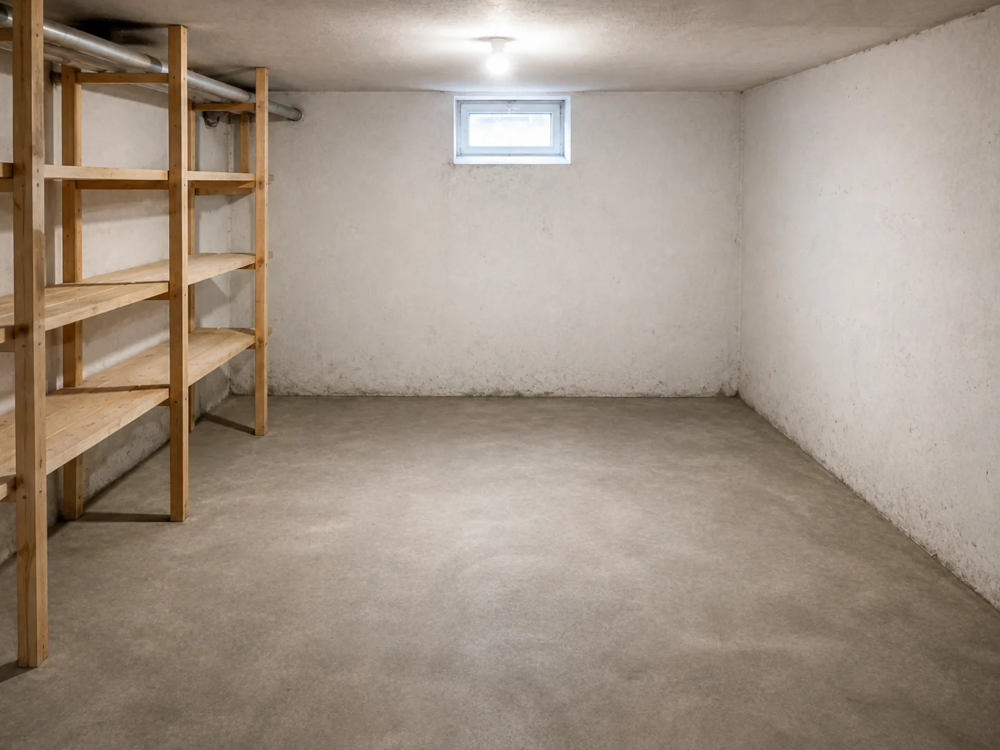

BX Entrümpelung · Frankfurt am Main
Entrümpelung & Haushaltsauflösung mit klarem Ablauf.
Zuverlässige Entrümpelungen in Frankfurt am Main und Umgebung – transparent abgestimmt, sorgfältig durchgeführt und besenrein übergeben.
Umzüge auf Anfrage.
- Unverbindliche Ersteinschätzung
- Transparente Absprache
- Besenreine Übergabe
Was wir für Sie übernehmen
Unsere Leistungen
Von der einzelnen Fläche bis zur vollständigen Haushaltsauflösung: Wir stimmen den Umfang klar mit Ihnen ab und kümmern uns um eine sorgfältige Durchführung.
Wohnungsentrümpelung
Wir räumen Wohnungen vollständig oder teilweise, übernehmen den Abtransport und hinterlassen die vereinbarten Flächen ordentlich.
Haushaltsauflösung
Wir begleiten Haushaltsauflösungen strukturiert – von der Abstimmung des Umfangs bis zur besenreinen Übergabe.
Keller & Dachboden
Auch schwer zugängliche Keller, Abstellräume und Dachböden werden sorgfältig geräumt und zuverlässig abgewickelt.
Büro & Gewerbe
Wir räumen Büros, Lager und gewerblich genutzte Flächen planbar und mit möglichst geringer Beeinträchtigung des Betriebs.
Abbau & Abtransport
Leichte Abbauarbeiten sowie der sichere Abtransport der vereinbarten Gegenstände werden direkt mit eingeplant.
Besenreine Übergabe
Nach Abschluss der Räumung hinterlassen wir die Flächen ordentlich und besenrein für die weitere Nutzung oder Übergabe.
Umzüge auf Anfrage
Kleinere Umzüge und praktische Umzugsunterstützung bieten wir ergänzend und nach individueller Absprache an.
Planbar von Anfang an
In vier Schritten zur freien Fläche.
- 01
Anfrage senden
Kontaktieren Sie uns per WhatsApp, E-Mail oder telefonisch und schildern Sie kurz Ihr Anliegen.
- 02
Fotos & Eckdaten senden
Hilfreich sind Angaben zu Objekt, Stockwerk, Aufzug, Parkmöglichkeit und – wenn vorhanden – einige Fotos.
- 03
Einschätzung & Angebot
Auf Basis der Angaben stimmen wir den Leistungsumfang mit Ihnen ab und erstellen eine unverbindliche Einschätzung beziehungsweise ein Angebot.
- 04
Räumung & Übergabe
Wir führen die vereinbarten Arbeiten sorgfältig durch und übergeben die geräumten Flächen besenrein.
Ergebnisse im Überblick
Vorher & Nachher
Vorher



Nachher



Regional für Sie im Einsatz
Frankfurt & Rhein-Main-Gebiet.
Unser Schwerpunkt liegt in Frankfurt am Main und im gesamten Rhein-Main-Gebiet. Auch Anfragen aus der näheren Umgebung prüfen wir flexibel – abhängig von Objekt, Umfang und Terminlage.
Kurz und klar
Häufige Fragen
Wie erhalte ich am schnellsten eine unverbindliche Einschätzung?
Am schnellsten über WhatsApp oder E-Mail mit einigen Fotos und den wichtigsten Eckdaten wie Ort, Objektart, Stockwerk, Aufzug und Parkmöglichkeit.
Sind Abtransport und Entsorgung im Angebot enthalten?
Der genaue Leistungsumfang wird vorab gemeinsam abgestimmt. Abtransport und Entsorgung werden dabei transparent im Angebot berücksichtigt, sodass Sie vor Beginn wissen, welche Leistungen enthalten sind.
Wird das Objekt besenrein übergeben?
Ja. Nach Abschluss der vereinbarten Arbeiten übergeben wir die geräumten Flächen ordentlich und besenrein.
Muss ich bei der Räumung persönlich vor Ort sein?
Nicht zwingend. Je nach Situation ist auch eine vorab abgestimmte Schlüsselübergabe möglich. Den Ablauf klären wir gemeinsam vor dem Termin.
Bieten Sie auch Umzüge an?
Ja. Kleinere Umzüge und Umzugsunterstützung bieten wir auf Anfrage als zusätzliche Leistung an.
Schnell zur Ersteinschätzung
Unverbindliche Anfrage senden
Tragen Sie die wichtigsten Eckdaten ein. Anschließend können Sie Ihre Anfrage direkt per WhatsApp oder E-Mail übermitteln.